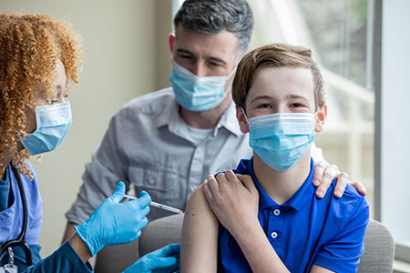

HPV stands for human papillomavirus. HPV is a common sexually transmitted infection which usually shows no symptoms and goes away by itself, but can sometimes cause serious illness. HPV is responsible for: almost all cases of genital warts and cervical cancer. 90% of anal cancers.
Every year in the United States, HPV causes about 36,000 cases of cancer in both men and women.
Early protection works best. That’s why HPV vaccine is recommended earlier rather than later. It protects your child long before they ever have contact with the virus.
When should my child get HPV vaccine?
- Dose #1
11–12 years (can start at age 9) - Dose #2
6–12 months after the first dose
Children ages 11–12 years should get two doses of HPV vaccine, given 6 to 12 months apart. HPV vaccines can be given starting at age 9 years.
Children who start the HPV vaccine series on or after their 15th birthday need three doses, given over 6 months.
If your teen isn’t vaccinated yet, talk to their doctor about doing so as soon as possible.
Teens and young adults should be vaccinated too
Everyone through age 26 years should get HPV vaccine if they were not fully vaccinated already.
HPV vaccination is not recommended for everyone older than age 26 years.
- Some adults age 27 through 45 years who were not already vaccinated might choose to get HPV vaccine after speaking with their doctor about their risk for new HPV infections and possible benefits of vaccination for them.
- HPV vaccination of adults provides less benefit, because more people in this age range were exposed to HPV already.
HPV vaccination is preventing cancer-causing infections and precancers
HPV infections and cervical precancers (abnormal cells on the cervix that can lead to cancer) have dropped since 2006, when HPV vaccines were first used in the United States.
- Among teen girls, infections with HPV types that cause most HPV cancers and genital warts have dropped 88 percent.
- Among young adult women, infections with HPV types that cause most HPV cancers and genital warts have dropped 81 percent.
- Among vaccinated women, the percentage of cervical precancers caused by the HPV types most often linked to cervical cancer has dropped by 40 percent.
Possible side effects
Like any vaccine or medicine, HPV vaccines can have side effects. The most common side effects are mild and include:
- Pain, redness, or swelling in the arm where the shot was given
- Dizziness or fainting (fainting after any vaccination, including HPV vaccine, is more common among adolescents)
- Nausea
- Headache
The benefits of HPV vaccination far outweigh the risk of potential side effects.